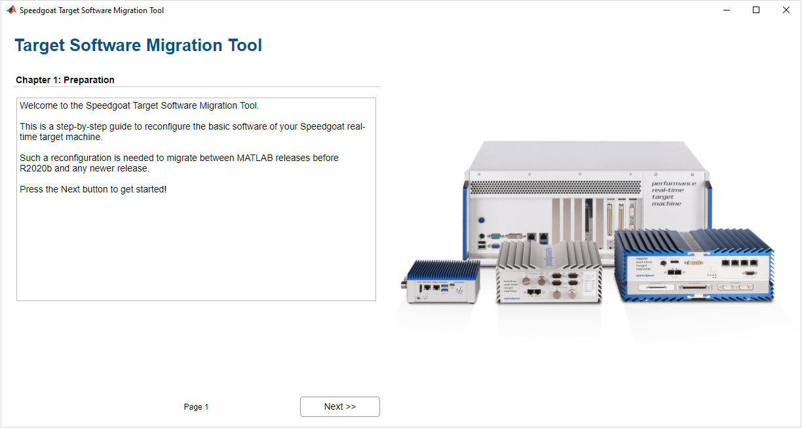

Speedgoat Tools
Speedgoat Tools — Speedgoat Target Software Migration Tool
Software Migration
If your real-time target machine is still configured for MATLAB R2020a and earlier (without QNX dual-boot), you can use this tool to migrate your target machine and connect to the MATLAB release you are currently running (MATLAB R2023b and later).
The Software Migration tool guides you step-by-step through the migration process. If you still need to use your target machine with MATLAB R2020a and earlier, configure the machine using the dual-boot option so that you can easily switch between Simulink Real-Time R2023b and later and the version of Simulink Real-Time you previously used.
![[Warning]](images/warning.png) | Warning |
|---|---|
Speedgoat I/O Blocksets for MATLAB R2021b and earlier are no longer maintained. |
![[Important]](images/important.png) | Important |
|---|---|
The migration process requires an Ethernet cable, monitor and keyboard, all of which should be connected to your target machine. Use PS/2 keyboards when these are supported by your target machine. The configuration is made directly on the target machine using a bootable USB drive. You can either order a Target Software Migration USB drive (Windows hosts only) from Speedgoat or easily generate one yourself using the software migration tool. It is important to note that your main drive will be reformatted. All the data you generated will be lost! |
You can start the tool by entering the following in the MATLAB Command Window:
speedgoat.migrateTarget

The tool will guide you through these three different processes:
Set Up a Dual-Boot System
Install both operating systems in dual-boot mode:
The QNX-based 64-bit Simulink Real-Time for MATLAB R2023b and later with the Speedgoat target software
The 32-bit Simulink Real-Time for MATLAB R2020a and earlier
The previously installed 32-bit kernel will be saved and carried over as the second boot option.
You will be able to select how your hard drive is partitioned, for example: 20 % for R2023b and later, 75 % for R2020a and earlier, 5 % for the bootloader.
The dual-boot mode allows you to select which version to boot. After a short timeout, the default boot option is used. The Speedgoat API provides a function to select which real-time operating system is loaded by default and how long the boot loader will wait for user input before booting the default real-time operating system.
speedgoat.setDefaultBootOption
![[Note]](images/note.png)
Note Dual-boot mode does not have any negative impact on real-time performance or compatibility.
Update to R2023b and later
Install the QNX-based 64-bit Simulink Real-Time for MATLAB R2023b and later with the Speedgoat target software.
The previously installed 32-bit kernel will be saved and can be recovered using the other processes: Create a Dual-Boot System or Revert to R2020a and earlier.
Revert to R2020a and earlier
Install the 32-bit Simulink Real-Time for MATLAB R2020a and earlier.
| Note |
|---|---|
You will not need to repeat these processes for current versions of MATLAB. You can, for example, update a target machine running R2020b to R2023b or R2025b using Simulink Real-Time Explorer (slrtExplorer) or by executing tg.update from your R2023b or R2025b MATLAB. |